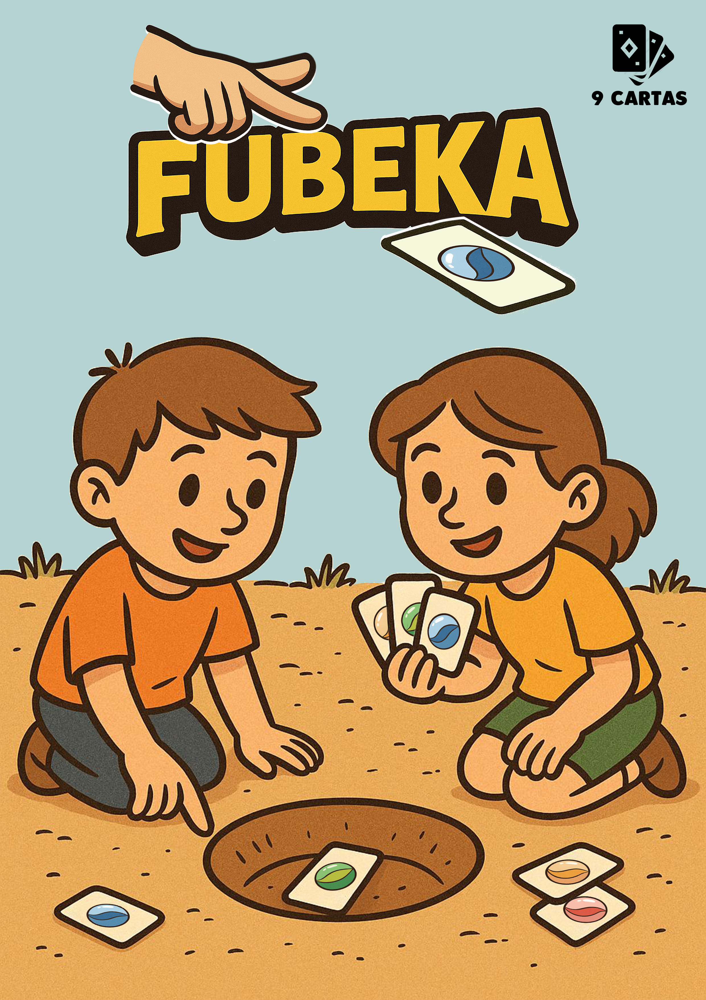

Um jogo de jogar cartas. Literalmente.
O material apresenta o "Fubeka", um microjogo de cartas inspirado na dinâmica clássica das bolinhas de gude.
A partida utiliza apenas nove cartas e exige que os participantes as arremessem fisicamente da borda da mesa em direção a um alvo central.
O objetivo principal envolve acertar uma carta de cova para, em seguida, tentar capturar as peças dos adversários através do contato direto. Caso um jogador erre o alvo ou deixe sua carta cair da superfície, ele perde o turno ou a própria carta para o oponente.
A disputa prossegue de forma tática e ágil até que um único competidor consiga reunir todo o baralho.
Trata-se de uma experiência que mescla habilidade motora e estratégia em sessões rápidas de jogo.
Podcast
Já que leu tudo até aqui, que tal ouvir?!
É só dar o play e curtir!